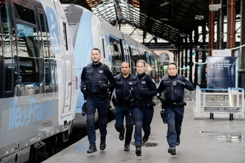

Mission principale
Assurer la sûreté des voyageurs, des agents et des infrastructures, en anticipant les risques et en mettant en œuvre des actions adaptées sur le terrain.

Sécurité des voyageurs, des agents et des infrastructures ferroviaires : un environnement exigeant où les systèmes d'information soutiennent au quotidien l’action des équipes opérationnelles.
SNCF Sûreté est l’entité dédiée à la prévention des risques, à la protection des personnes et des biens et au maintien d’un haut niveau de sécurité dans l’ensemble de l’écosystème SNCF. Les équipes, présentes sur le terrain comme en support, s’appuient sur des outils numériques pour surveiller, analyser et agir rapidement.
Assurer la sûreté des voyageurs, des agents et des infrastructures, en anticipant les risques et en mettant en œuvre des actions adaptées sur le terrain.
Agents de sûreté, superviseurs, encadrement et équipes de pilotage utilisent les systèmes d’information pour suivre les incidents, coordonner les interventions et partager l’information.
Réactivité, fiabilité des données, traçabilité et coopération entre métiers sont au cœur de la performance des équipes Sûreté.
Les systèmes d’information de SNCF Sûreté sont des outils critiques qui soutiennent directement la capacité des équipes opérationnelles à agir vite et à prendre les bonnes décisions.
Les outils doivent fournir une information exacte et à jour pour analyser rapidement les situations de terrain et prioriser les actions.
Les applications doivent rester disponibles, y compris en période de forte activité, pour ne pas freiner l’action des équipes de sûreté.
Les actions (signalement, intervention, décision) sont tracées afin de faciliter le suivi, le reporting et l’amélioration continue.
Des campagnes de tests structurées garantissent la stabilité des applications et limitent les régressions lors des évolutions.
Les solutions doivent être performantes, sécurisées et conformes aux exigences internes de la SNCF et aux bonnes pratiques du numérique.
Les systèmes d’information doivent pouvoir intégrer de nouvelles fonctionnalités tout en restant maintenables et lisibles pour les équipes techniques.
Un outil efficace est un outil compris, adopté et utilisé. L’ergonomie et la simplicité sont donc essentielles.
Chaque évolution logicielle doit être expliquée, testée et déployée en tenant compte du quotidien des équipes.
Les retours des utilisateurs alimentent les améliorations des outils dans une logique de co-construction.
En tant qu’assistant tests & recettes, j’interviens dans la phase qui permet de s’assurer qu’une application répond réellement aux besoins des utilisateurs avant sa mise en production.
Analyse des spécifications fonctionnelles et techniques, prise en compte du contexte métier de la sûreté ferroviaire et des usages réels sur le terrain.
Rédaction de cas de test couvrant les parcours clés : création et suivi d’incidents, consultation d’informations, actions de pilotage, etc.
Exécution des tests, identification des anomalies, qualification précise des dysfonctionnements et suivi de leur correction avec les équipes de développement.
Participation à la recette avec les métiers, validation des évolutions et vérification que la solution répond aux attentes des équipes opérationnelles.
Cette expérience chez SNCF Sûreté me permet de relier mes compétences de développement en BTS SIO SLAM à des enjeux concrets de sécurité, de qualité logicielle et de service aux utilisateurs.